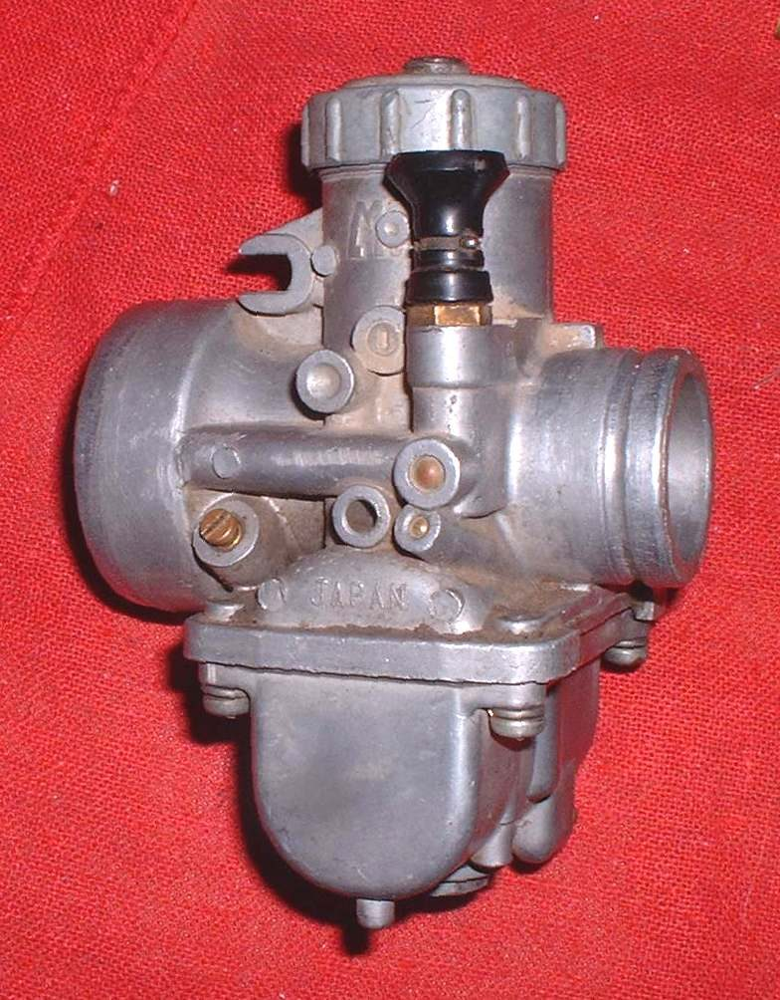
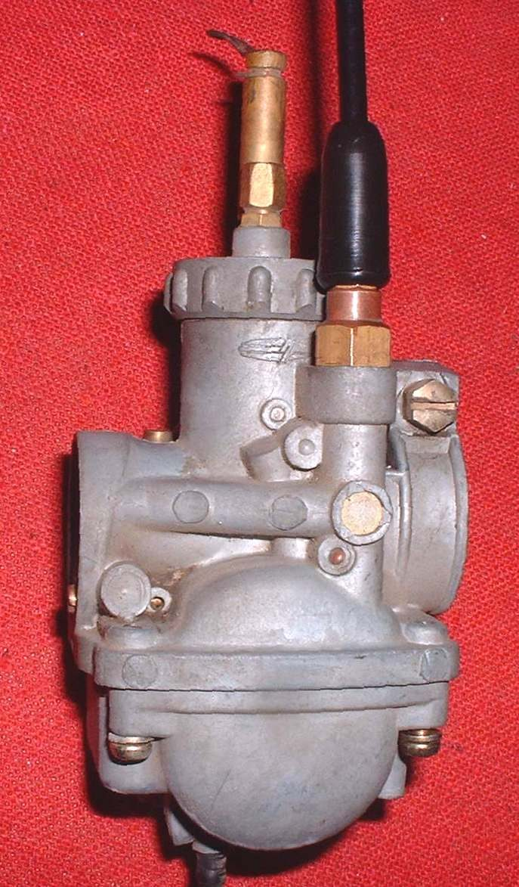
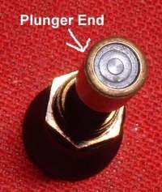

Home mechanic (basic tools) · Time: 15 to 30 min (estimate) (estimate)
The choke gives a cold engine the extra-rich mixture it needs to start. On many carburettor bikes a lever on the handlebar pulls a cable that lifts a plunger (a starter valve) or closes a flap (a butterfly) in the carburettor. If the cable is too tight, the choke never fully closes: the engine runs rich, idles high and wastes fuel. If it is too loose, the choke does not work and the bike is hard to start cold.
Some bikes have a knob directly on the carburettor (no cable), and many scooters have an automatic electric choke. Fuel-injected bikes have no choke: the ECU raises idle when cold (K-Light 125: below 68 °C engine temperature).
Safety
- Engine off and cool. You may have to remove a side panel or the tank: no flames, catch fuel.
- Do not run the engine indoors to test.
You need
- Small spanners for the cable adjuster, screwdrivers.
- Cable oil for a stiff cable.
Steps
- Find both ends: the lever on the bar and the cable end at the carburettor (a plunger nut on the carb body, or a lever on the carb with a flap).
- Choke lever fully OFF. At the carburettor, the plunger must be fully down, or the flap fully open. There should be a little slack in the cable at this position.
- If there is no slack, or the plunger is held up, loosen the adjuster locknut and turn the adjuster to give a little slack. Tighten the locknut.
- Choke lever fully ON. The plunger must lift fully, or the flap must close fully. If not, reduce the slack a little. Repeat until both positions are right.
- If the lever is stiff or does not stay in place, oil the cable (Lubricate control cables) and check the lever's friction spring.
- Turn the bars lock to lock with the choke OFF: the cable must not pull the plunger up.
Check your work
- Cold engine starts with choke ON and runs. When warm, with choke OFF, idle is normal and does not drop when you push the lever further off.
- No change in idle when you turn the bars.
If it did not fix the problem
- Plunger stuck, or flap does not move freely: Check the choke or starter valve.
- Engine still needs choke when warm: Starts only with the choke on or the throttle held open.